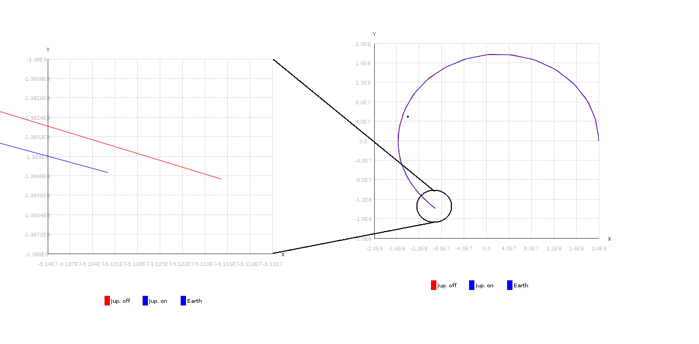

The DE405Plus class provides a DE405 Ephemeris reader for the sun, planet, and moon positions and velocities. The user can choose between a common set of reference frames.
The class also provides a force acceleration function for propagation of trajectories. The force contribution from the sun, each planet individually, and the moon can be turned on or off.
| Acronym | Name | Origin | X-axis | Y-axis | X-Y-Plane | Z-axis |
| J2000 | Sun | Mean Equinox at 12:00 Terrestrial Time on 1 January 2000 | Earth's spin axis or celestial North Pole. | |||
| ICRF | International Celestial Reference Frame | Sun | origin of right ascension | north celestial pole | ||
| HEE | Heliocentric Earth Ecliptic | Sun | Sun to Earth line | Ecliptic | ||
| GCRF | Geocentric Celestial Reference Frame | Earth | ||||
| ECEF | Earth-Centered Earth-Fixed | Earth center of mass | 0° latitude (Equator) and 0° longitude (Greenwich) | Earth's equatorial plane | ||
| ECI | Earth-Centered Inertial | Earth | vernal equinox | Earth's equatorial plane | ||
References:
http://www.ltas-vis.ulg.ac.be/cmsms/uploads/File/ICRF.pdf
http://en.wikipedia.org/wiki/Earth-centered_inertial
The example below shows a trajectory that was progated in the ICRF frame for 300 days. The initial conditions were
\begin{equation} \mathbf{r_0}=2e8, 0, 0 km\end{equation}
\begin{equation} \mathbf{v_0}= 0, 24.2, 0 km/s \end{equation}
In one case, only the sun was turned on, in the other case, Jupiter was turned on additionally. After 300 days, the position of the spacecraft shows a difference of about 150,000 km, depending on whether Jupiter was taken into account or not.
